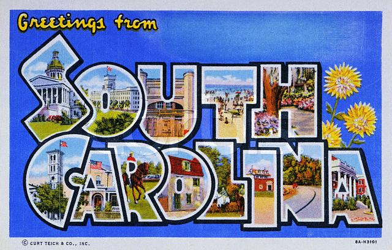

Feb 12th-16th, 2004 - Charleston, South Carolina &
Savannah, GA
Even though I'm from NY, about a day's drive from states one would call
Southern, growing up, the South seemed as foreign as any country on the
other side of the globe. My images of it came from PBS and TV
news--murderous cowards in white hoods, fire hoses turned on civil
rights demonstrators and big old politicians who drawled on about the
importance of keeping the races separate and preserving the Southern
way of life. This was not the world I knew. It was not a world I wanted
to know.
Imagine my surprise, then, warily edging further and further south
and finding lots to like. Maybe it's like George Bush in the
last round of presidential debates; people expected so little that
whenever he did even a hair better than that, they were floored. But
sure enough, folks are
extraordinarily polite. We drive by stretches of nothing, towns of
dilapidated tin shacks, and then nothing again. In larger towns and
cities, the landscapes are lovely, filled with
gigantic old trees. Buildings go cornice-to-cornice over which is
prettier. Charleston
went to the head of the class on this front. It's gorgeous, with
the largest, most intact historic district of any I've seen outside of
Europe. It's raining hard but we walk the streets anyway, gobbling up
the beauty of the architecture and the wonderful feel of the place.
Spectacular homes with the best porches known to man fill street after
street, surrounded by trees dripping with Spanish Moss and volunteer
ferns that spring from their branches after the rain. And yet...for all
of this, it's impossible to be in the south and not be haunted by its
history. These homes and the lives lived so comfortably within their
walls were--and to some extent, still are--supported by a blatantly
exploitative system.
We check into Charleston
Place, where we do a little exploiting of their system: they offer
a Valentines' Day Package, with a huge discount for those married 25
years or more. We just squeak under the line as we register and wind up
with a bunch
of stuff we probably wouldn't have arranged on our own. That starts off
with a carriage ride through Charleston. We decide to combine that
with the "romantic picnic lunch" provided by the hotel. So, a sweet
young woman clip-clops us over Charleston's cobbles in a horse and
carriage. We sip champagne and nibble cheese as she offers up bits and
pieces of local history. On the corner of Meeting and Broad, she notes
the junction of a
church, post office, city and county building, allowing residents to
"hail,
mail, jail and bail, all within just a few steps." (Is there a tour
guide
rhyme lab somewhere, sweating out these nuggets?) Happily buzzed, we
ask whether someone of a
liberal political bent can survive in one of the red states. She
diplomatically allows that one manages to find a few kindred spirits.
Driving by the public market, she notes that "slaves were never sold
there," as if the lack of trade in humans spares it the radioactive
quality of so many other sites.
That evening, a dozen long-stemmed red roses have arrived in our room,
along with chocolate-dipped strawberries. (Hotel management, we feel
the
love, but we're a little uneasy as it seems to be a one-way
relationship.) We go out to supper in the fancy restaurant in the
hotel,
as part of the package deal. When we return, we're baffled to find a
huge plate of appetizers. Somehow, dinner had knocked back our desire
to snack
on canapes. Did
this express management's lack of faith in the
dining experience?
Moving into the bedroom, housekeeping has gone
nuts with rose petals. They're strewn everywhere: on the bed tables, on
window
sills, around the edge of the tub and sink, all of which are lit with
lots of
flickering votives. It's pretty charming to have such a scene set for
you and don't get us wrong--we enjoyed it. But we're baffled when the
next day, housekeeping fails to clean
up the petals, which are now drying up and just as everywhere as
ever--possibly, more so. After showering, I fire up
the hair dryer and all hell breaks loose in the bathroom, with petals
flying everywhere. We live with them for the next two days and hope
whoever checked in after us didn't have to suffer the detritus of the
hotel's crush on us.
On Valentine's night, we attend the premiere of a play at The
Charleston Stage, The Seat of Justice, based on
Briggs vs. Elliot, one of the South
Carolina feeder cases that helped Brown
vs. The Board of Education come
to fruition. Seen though the eyes of an activist elderly narrator, Ruby
Cornwell, the play tells the story of the brave black residents of the
area who risked all to unravel "separate but equal" schooling. The
concierge at our hotel, who arranges tickets for us, tells me "I knew
Miss Ruby. She was a fine, fine woman."
Waiting for the play to start, we read the program. We're sitting in
The
Dock Street Theater, built in 1809. It is, we find out, the city's
last surviving antebellum hotel. It was restored by the WPA in the
'30s, when a theater and stage were added, rather like one that might
have existed two centuries before. When the building was new and
strictly a hotel, it housed the actor Junius Brutus Booth, John Wilkes
Booth's father. I'm contemplating this strange arc and considering the
subject matter of the play we're about to see, when a voice behind me
starts chatting up her seatmates. Sadly, my worst expectations are met.
"Well, look at that," she clucks, reading her program, which she keeps
calling the booklet. "Look at those names in this booklet. The Jews
always donate the money but they never come out to these performances.
Look around. Do you see any?"
I turn to look at her. She's a white woman, maybe 10 years older than
me.
"And how about that?" she asks her companions. "Tonight we're an integrated house."
I suppress an urge to apologize to the black woman sitting next to me.
The lights dim and the curtain goes up. The show has the same earnest,
small-town quality as the play inside of "Waiting for Guffman," right
down to its gee-whiz narration. Still, it's a compelling story and a
true one. It started with a sharecropper, trying to arrange for a
school bus
for his kids so they wouldn't have to walk nine miles each way to and
from school. It turns into the first anti-segregation lawsuit in U.S.
history, argued by rising young civil rights lawyer Thurgood Marshall.
(It also failed, but it served as an important rung on a the ladder
that led to Brown vs. the Board of Education.) And it does a nice job
of driving home the fact that even though Brown legislated
against separate but equal, it called for desegregation "with all
deliberate speed." That's a lot of wiggle room for a region accustomed
to, shall we say, a slower pace. Statistics are offered up at the
play's end
demonstrated how little has changed in Summerton, where the first case
started. Today, the public schools there are 94.5 percent black.
We roll down to Savannah for an overnight and find it lovely in its own
right. There are huge swaths of historic homes here, too. But it isn't
as consistent as Charleston. Soviet-style apartment houses sprout up
next to mansions that have 200 years on them. But Savannah wins on the
lovely park and square front. The city's planners were brilliant in
sprinkling green spaces throughout all neighborhoods. Walk carefully,
and you can travel square to square to square with hardly a large
street in between.
STATS
Snoozed at:
Charleston
Place
Ballastone Inn
Background on The Seat of Justice:
article
that made us go see it
events
timeline